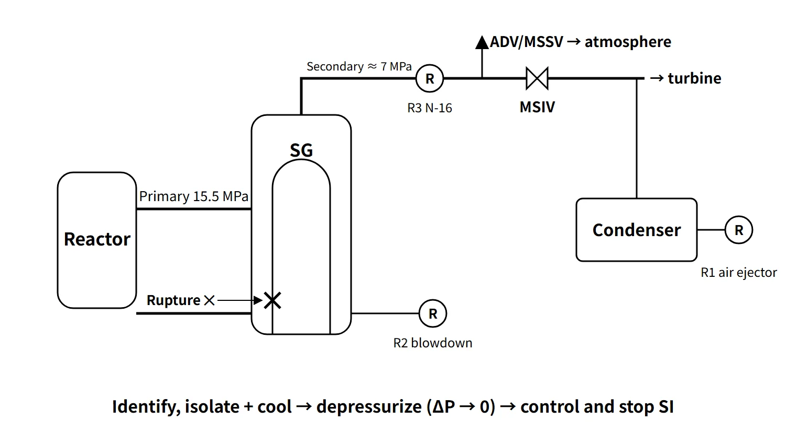

Accidents, Safety Analysis & Severe Accidents · C-SA-002
Steam Generator Tube Rupture (SGTR) — a Loss of Coolant That Bypasses Containment, and the Pressure-Equalization Strategy
A tube rupture lets primary coolant escape through the steam line outside containment; the leak stops only when RCS pressure is brought down to the ruptured SG pressure.
A steam generator tube rupture (SGTR) is an accident in which a U-tube of a PWR steam generator breaks and high-pressure primary coolant flows into the low-pressure secondary system. It is a loss-of-coolant accident through a breach of the primary pressure boundary, and its defining feature is that the release path bypasses containment.
Principle and mechanism
This entry concentrates on the transient after the rupture, detection, operating strategy and safety-analysis criteria.
What leaks where
In a steam generator, primary coolant flows inside the tubes and secondary feedwater outside them (shell side). The wall between the two fluids is a nickel-alloy tube about 1 mm thick, and the tubes make up most of the area of the primary pressure boundary. At rated operation the pressure difference is about 8.5 MPa (primary 15.5 MPa, secondary about 7 MPa).
The design basis accident assumes a double-ended rupture of a single tube: one location severed completely around the circumference so that both broken ends are open (SRP 15.6.3). Primary-to-secondary leakage that normal charging can make up is treated as a "leak"; when it exceeds charging capacity and pressurizer level and pressure keep falling, it is treated as a "rupture".
The rupture and the inflow happen in an SG inside containment. The secondary side, however, continues outside containment through the main steam and feedwater lines. Steam from the ruptured SG can therefore reach the atmosphere without passing through containment when the atmospheric dump valves (ADV) or main steam safety valves (MSSV), located upstream of the MSIV, open. This is why SGTR is classed as a "containment bypass" accident.
![PWR primary and secondary system diagram: reactor, pressurizer, hot and cold legs and RCP inside a dashed containment boundary at 15.5 MPa, a steam generator with one tube fully severed near the tubesheet (design basis, pressure difference about 8.5 MPa), and a red dashed path from the break up the main steam line at about 7 MPa to the ADV and MSSV upstream of the MSIV, labelled valves open, release to air equals bypass; radiation monitors R1 on the condenser air ejector exhaust, R2 on the blowdown sample and R3 on the main steam line (N-16), and a photo-style inset of the ruptured tube above the tubesheet](../../assets/images/concepts/c-sa-002-sgtr/fig1-sgtr-bypass-path.webp)
How the transient develops
- Rupture → primary-to-secondary flow → pressurizer pressure and level fall, charging flow rises, volume control tank level falls.
- Secondary side: ruptured SG level rises, feedwater flow < steam flow, secondary radiation monitors alarm.
- Reactor trip (low pressurizer pressure; OTΔT etc. in Westinghouse designs) → turbine trip → safety injection actuation signal (SIAS).
- RCS pressure levels off where safety injection flow balances break flow.
- If loss of offsite power is assumed, the condenser is unavailable, secondary pressure rises and steam is released to the atmosphere through the ADVs and MSSVs.
Characteristic symptoms: telling it apart from LOCA and MSLB
| Variable | SGTR | LOCA | MSLB |
|---|---|---|---|
| Pressurizer pressure and level | Decrease | Rapid decrease | Decrease (cooldown shrinkage) |
| Containment pressure, temperature, radiation | No change | Increase | Pressure and temperature increase (break inside containment) |
| Secondary radiation | Increase | No change | No change |
| Affected SG level and pressure | Level increases | — | Level and pressure drop rapidly |
| RCS temperature | Slight decrease | Decrease | Rapid decrease (overcooling) |
All three accidents lower pressurizer pressure and level, so they are distinguished by rising containment variables (LOCA, MSLB) and rising secondary radiation (SGTR).
What it means in a plant
Detection equipment
- Condenser air ejector (vacuum pump) exhaust radiation monitor: detects non-condensable gases (Xe, Kr) and is the most sensitive early indicator.
- SG blowdown radiation monitor: installed per SG and used to identify the ruptured SG.
- Main steam line radiation monitor (N-16, high-range gamma): during power operation it estimates the leak rate in real time from N-16 (half-life 7.1 s). After a reactor trip N-16 decays quickly, so post-accident monitoring relies on other indicators as well.
- Falling pressurizer pressure and level; charging–letdown mismatch (RCS inventory balance).
- Rising ruptured-SG level; feedwater/steam flow mismatch.
- Radiochemical analysis of secondary samples (iodine, tritium etc.).
Monitor arrangements and names differ between designs. A diagnosis is not based on one alarm; radiation, SG level and pressurizer indications are read together.
At low power (10 % or less), little N-16 is produced and the main steam line monitors lose sensitivity. Early detection then relies on stepping up the air ejector exhaust and blowdown monitors, the frequency of secondary sample analysis, and charging–letdown balance monitoring.
Operating strategy: identify and isolate, cool, depressurize, terminate SI
There are three goals: (1) stop the primary-to-secondary flow, (2) minimize releases to the atmosphere, and (3) reach the entry conditions for the shutdown cooling system (SCS) while keeping the core cooled. For a South Korean standard plant this can be summarized in four steps:
- Identify and isolate the ruptured SG: identify it from the radiation monitors and the level rise; close the MSIV, stop auxiliary feedwater and adjust the ADV setpoint.
- Cool the RCS: using the turbine bypass valves of the intact SGs (ADVs if unavailable), cool the RCS well below the saturation temperature at the ruptured SG pressure to secure subcooling.
- Depressurize the RCS: reduce RCS pressure to the ruptured SG pressure with pressurizer main spray, auxiliary spray and the PORV. When ΔP reaches zero, break flow also stops.
- Terminate or throttle SI, then cool down: confirm subcooling, pressurizer level and the secondary heat sink, terminate SI and cool down to the SCS entry conditions.
This numbering groups the functions; the actual step order and entry conditions follow each unit's EOP. SI termination is likewise not decided on matched pressure alone; all the termination conditions are checked. Timing of isolation needs particular care. Isolating too early lets the coolant and heat still coming from the primary side drive the ruptured SG pressure up to the MSSV setpoint, so the RCS is usually cooled to some extent before isolation (for example, cooling to about 280 °C before isolation in an APR1400 study). Conversely, terminating SI too late keeps RCS pressure above the ruptured SG and the inflow resumes, and SG overfill can flood the main steam line or make the MSSVs discharge water and stick open.
![Conceptual trend of pressure in MPa absolute through the response stages (automatic response, identify and cool, isolate, depressurize, SI stop and cool isolated SG): RCS pressure falls from about 15.5 MPa past reactor trip and SI actuation, the ruptured SG pressure rises after isolation but stays below an example MSSV setpoint near 8 MPa, the intact SG pressure keeps falling, and RCS and ruptured SG pressures meet at the pressure-equalization point where a lower plot of the leak indicator W over W0 falls from 1.0 to zero; late in the cooldown RCS pressure drops just below the ruptured SG, allowing backfill](../../assets/images/concepts/c-sa-002-sgtr/fig2-pressure-equalization.webp)
Stopping the RCP in the ruptured-SG loop
Stopping the RCP in the ruptured-SG loop reduces the forced-circulation heat input into the isolated SG early on, while the RCS is still hot, and so eases its pressure rise (MSSV opening). Stopping the RCP does not, however, stop the leak. The leak rate is set by the break area and the primary-to-secondary pressure difference, which is the difference between the RCS pressure governed by the pressurizer and the ruptured SG pressure (the RCP sits in the cold leg downstream of the SG). The leak stops only when cooling and depressurization bring RCS pressure down to the ruptured SG pressure. Stopping all RCPs actually makes depressurization harder because normal main spray is lost; at Ginna (1982), depressurization had to be done with the PORV after the RCPs were stopped. The US NRC therefore required RCP trip criteria that allow forced circulation to be maintained during an SGTR (Generic Issue 67.4.1 → NUREG-0737 II.K.3(5)). Weigh the reduced heat input against keeping main spray and subsequent cooling, and follow the unit's EOP.
Cooling the isolated SG
Hot water remains in the isolated SG and keeps its pressure up. If only the RCS is cooled and depressurized, secondary-to-primary backflow occurs, the whole RCS cannot be brought down to the SCS entry conditions, and the risk of MSSV opening remains. Cooling therefore proceeds as follows:
- Backfill: lower RCS pressure below the isolated SG so that SG water flows back into the primary side and cools it. There is no atmospheric release, but boron dilution must be monitored.
- Blowdown: drain through the blowdown system or to the condenser while cooling.
- Steam release: use the turbine bypass valves (to the condenser) first, and the ADVs only if that is unavailable (release to atmosphere, last resort).
Related events
- Ginna (US, 1982): one tube ruptured during power operation because of foreign material on the secondary side. During depressurization the pressurizer PORV stuck open and was isolated with its block valve, and a site area emergency was declared. Releases to the atmosphere were about 485 Ci of noble gases and about 1.15 mCi of I-131 (NUREG-0909).
- Mihama 2 (Japan, 1991): high-cycle fatigue rupture caused by anti-vibration bars that had not been inserted.
- Ulchin 4 (now Hanul 4, 2002): a tube rupture released about 45 t of coolant and a white emergency was declared (according to press reports).
Regulatory basis
| Basis | Key point |
|---|---|
| NUREG-0800 SRP 15.6.3 | Review of SGTR radiological consequences; two cases assessed: pre-accident iodine spike and accident-initiated (concurrent) iodine spike |
| RG 1.183 (AST) | EAB and LPZ TEDE: pre-accident spike 0.25 Sv (25 rem), concurrent spike 25 mSv (2.5 rem); control room 50 mSv |
| 10 CFR 50 App. A GDC 14, 31, 32 | Prevention of leakage and failure of the reactor coolant pressure boundary; inspectability |
| STS 3.4.13 / 5.5.9 | Primary-to-secondary leakage LCO (150 gpd per SG framework); SG programme (NEI 97-06) |
| KINS Safety Review Guideline for LWRs 15.6.3 | South Korean review criteria in the same framework as SRP 15.6.3 |
| NSSC Notice No. 2026-7 (reactor siting; replaced the former siting technical standard on 2026-01-20) | Accident dose criteria at the exclusion area boundary etc. |
The analysis issues are the rupture location (the hot-leg side near the tubesheet is limiting), loss of offsite power, a single failure of an ADV or MSSV sticking open, overfill margin, and operator action times. In the APR1400 design certification review, the NRC required the analysis to be extended beyond the 30-minute operator action up to the end of MSSV releases.
Three things have changed since the questions were set. The dose criteria moved from TID-14844 (whole body and thyroid) to the AST (TEDE); the tube material changed to Alloy 690TT and many South Korean plants replaced their SGs; and since the 2016 amendment of the Nuclear Safety Act, multiple-failure accidents such as multiple SGTR are within the scope of the accident management plan.
Easily confused pairs
| SGTR | ISLOCA | MSLB | |
|---|---|---|---|
| Boundary breached | Primary–secondary (tubes) | Primary–low-pressure system (piping outside containment) | Secondary (main steam line) |
| Loss of coolant | Yes | Yes | No (secondary steam) |
| Containment bypass | Yes | Yes | Not applicable |
| Main hazard | Bypass release, overfill | Bypass release, core damage | Overcooling → reactivity insertion, return to criticality |
| Key response | Stop the leak by pressure equalization | Isolate the system | Isolate the broken SG, boron injection |
Key points at a glance
- Definition: an accident in which an SG tube ruptures and primary coolant flows to the secondary side; the design basis is a double-ended rupture of one tube.
- Features: a breach of the primary pressure boundary (a type of LOCA) + a containment bypass release path (ADV, MSSV).
- Symptoms: pressurizer pressure and level ↓, ruptured SG level ↑, feedwater < steam flow, secondary radiation ↑, no change in containment variables.
- Detection: air ejector exhaust, SG blowdown and main steam N-16 monitors; RCS inventory balance.
- Strategy: identify and isolate the ruptured SG → cool with the intact SGs → depressurize to equal pressures (ΔP = 0) → terminate SI → enter SCS.
- Cautions: early isolation opens the MSSVs; late SI termination causes overfill.
- Cooling the isolated SG: backfill → blowdown → steam release (TBV first, ADV last).
- Criteria: SRP 15.6.3; doses assessed for both pre-accident and concurrent iodine spikes.

This is a model answer, not an official solution. It reflects the criteria current as of 2026.
Exam relevance
SGTR has appeared ten times in the Korean Professional Engineer (Nuclear Power) exam: 76th exam, session 2, Q4 (detection equipment and a three-step operating strategy); 2009 exam, session 2, Q3 (early detection of an SGTR at low power and the operating response); 2011 exam, session 4, Q1 (the four-step response of a South Korean standard plant and leak symptoms); 2015 exam, session 2, Q1 (symptoms and operator actions); 2020 exam, session 4, Q5 (symptoms, subsequent cooling and the need to stop the RCP); 2021 exam, session 2, Q6 (why and how to cool the isolated SG); 2022 exam, session 2, Q1 (common and characteristic symptoms of MSLB, LOCA and SGTR); 2022 exam, session 2, Q4 (SG tube-leak conditions for each emergency class); 2023 exam, session 2, Q1 (MSLB, SGTR, RCP seizure and rod ejection transients); and 2024 exam, session 2, Q1 (steam flow restrictor, tube degradation and the transient after a rupture).
The question types are descriptive: symptoms compared with LOCA and MSLB, detection equipment, the step-wise operating strategy and the isolated-SG cooling methods. The point graders look for is that the leak is stopped by pressure equalization, not by isolation alone.